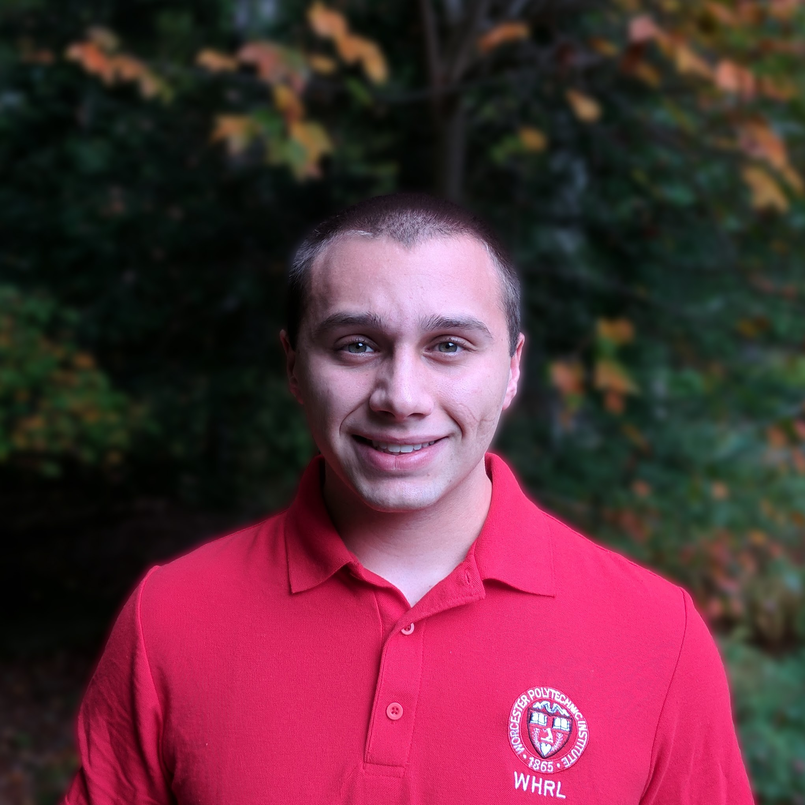

My name is Kyle Corry, I live in Chepachet, RI where I'm a web designer, nature photographer, open source programmer, minimalist, and computer science student at WPI.
I'm not currently available to work on new projects, but I normally take on web design work for causes that I like. Many of the websites I have built are related to nature, the environment, education, or sustainability.
I can be contacted at kylecorry31@gmail.com